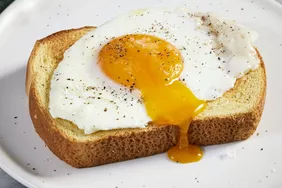

Basted Eggs

This recipe produces a delicious, simple egg with satisfying,
set whites and a creamy, runny yolk. It's similar to a poached egg, but
more flavorful and less fussy.
Have you ever made a basted egg? If you haven't, it's time to
remedy that ASAP! Basted eggs are similar to poached eggs, but they're
much easier to cook. You'll come back to this simple basted egg recipe
time and time again.
Ingredients
-
Butter: These traditional basted eggs are cooked in butter
on the stove.
-
Eggs: This recipe makes two basted eggs. You can easily
adjust the measurements to make more or less.
-
Water: A tablespoon of water helps steam the top of the
egg.
-
Seasonings: When the eggs are done, season them with flaky
sea salt and freshly ground black pepper.
Step by Step
-
Melt butter in a medium nonstick skillet over medium heat.
Carefully crack eggs into the skillet and let cook until whites have
almost set, about 1 minute.
-
Add water, cover skillet with a lid or cookie sheet, reduce
heat to medium-low.
-
Let cook until whites have set, yolks are still runny, and
some of white has set over yolk, 1 to 2 more minutes. Remove lid and
transfer eggs to a serving plate. Garnish with pepper and flaky salt, if
desired. Serve immediately.